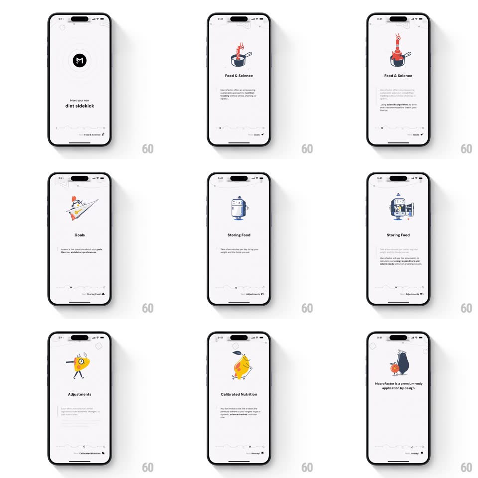

Media
Frame-by-frame

Rebuild this interaction 1:1: MacroFactor's story-style onboarding - swipe horizontally through full-screen value-prop pages ("Meet your new diet sidekick", Food & Science, Goals, Storing Food, Adjustments, Calibrated Nutrition), each with an animated vector illustration, staggered text, and a dotted progress bar that tracks position.

Rebuild this interaction 1:1: MacroFactor's story-style onboarding - swipe horizontally through full-screen value-prop pages ("Meet your new diet sidekick", Food & Science, Goals, Storing Food, Adjustments, Calibrated Nutrition), each with an animated vector illustration, staggered text, and a dotted progress bar that tracks position.
## Integration
Integration: stack-agnostic spec - springs given as stiffness/damping, timed motions as duration + curve; map every value to your framework and animation library of choice.
## Scene
Off-white full-screen pages: small top bar, a centered characterful vector illustration (flaming pot, paper-plane rocket, fridge, lemon character with orange), headline + paragraph below, and a custom bottom progress control - a row of dots with a label naming the current page.
## Motion spec
Pattern: swipeable story pager with per-page illustration animation.
- Horizontal drag moves pages 1:1 with the finger; adjacent page peeks at the edge (24px). Release past 30% or with velocity snaps to the next page (spring ~300/28, ~350ms); otherwise snaps back.
- On each page landing: illustration animates its signature loop (pot flames flicker, rocket tilts and thrusts, lemon rocks side to side - 2-3s loops), headline rises 10px + fades (250ms), paragraph follows 100ms later.
- The progress bar: current dot stretches into a pill (width 8px -> 24px, spring ~350/26) and the page label crossfades (200ms) on every snap.
- Illustrations exit/enter with a slight parallax (illustration moves at 0.8x page speed during drags).
## Calibration
- Exactly one page settles at a time - no free scroll between stories.
- Label text ("Food & Science", "Goals", ...) is part of the progress control, not the page.
## Reduced motion
Pages crossfade; illustration loops stop after first play.
## Don't miss
- The illustration style is consistent flat vector with one accent color per page.
- The first page is a logo moment ("M" mark + "Meet your new diet sidekick") before content pages begin.